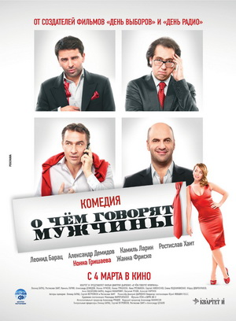

Trilogy of epic fantasy adventure films directed by Peter Jackson, based on the novel The Lord of the Rings by British author J. R. R. Tolkien. The films are subtitled The Fellowship of the Ring (2001), The Two Towers (2002), and The Return of the King (2003).
Lord of the Rings
How I met Your Mother
Star Wars
What do men talk about?
Lord of the Rings Fellowship of the Ring
December 10, 2001
- Elijah Wood
- Ian McKellen
- Liv Tyler
- Viggo Mortensen
- Sean Astin
- Cate Blanchett

How I met Your Mother
September 19, 2005
- Josh Radnor
- Jason Segel
- Cobie Smulders
- Neil Patrick Harris
- Alyson Hannigan
American sitcom, created by Craig Thomas and Carter Bays for CBS. The series, which aired from September 19, 2005, to March 31, 2014, follows the main character, Ted Mosby, and his group of friends in New York City's Manhattan. As a framing device, Ted, in 2030, recounts to his son, Luke, and daughter, Penny, the events from September 2005 to May 2013 that led him to meet their mother.
Star Wars Phantom Menace
May 16, 1999
- Liam Neeson
- Ewan McGregor
- Natalie Portman
- Jake Lloyd
American epic space opera film written and directed by George Lucas. It stars Liam Neeson, Ewan McGregor, Natalie Portman, Jake Lloyd, Ahmed Best, Ian McDiarmid, Anthony Daniels, Kenny Baker, Pernilla August and Frank Oz. It is the fourth film in the Star Wars film series, the first film of the prequel trilogy and the first chronological chapter of the "Skywalker Saga".

What do men talk about?<< /h2>
March 4, 2010
- Leonid Barats
- "Rostislav Khait
- Aleksandr Demidov
- Kamil Larin
Comedy film of 2010 directed by Dmitry Dyachenko, based on the play “Conversations of Middle-Aged Men
about Women, Cinema and Aluminum Forks” with the participation of actors from the comic theater
“Quartet I”. The film premiered in Russia on March 4, 2010.
Comedy film of 2010 directed by Dmitry Dyachenko, based on the play “Conversations of Middle-Aged Men about Women, Cinema and Aluminum Forks” with the participation of actors from the comic theater “Quartet I”. The film premiered in Russia on March 4, 2010.
